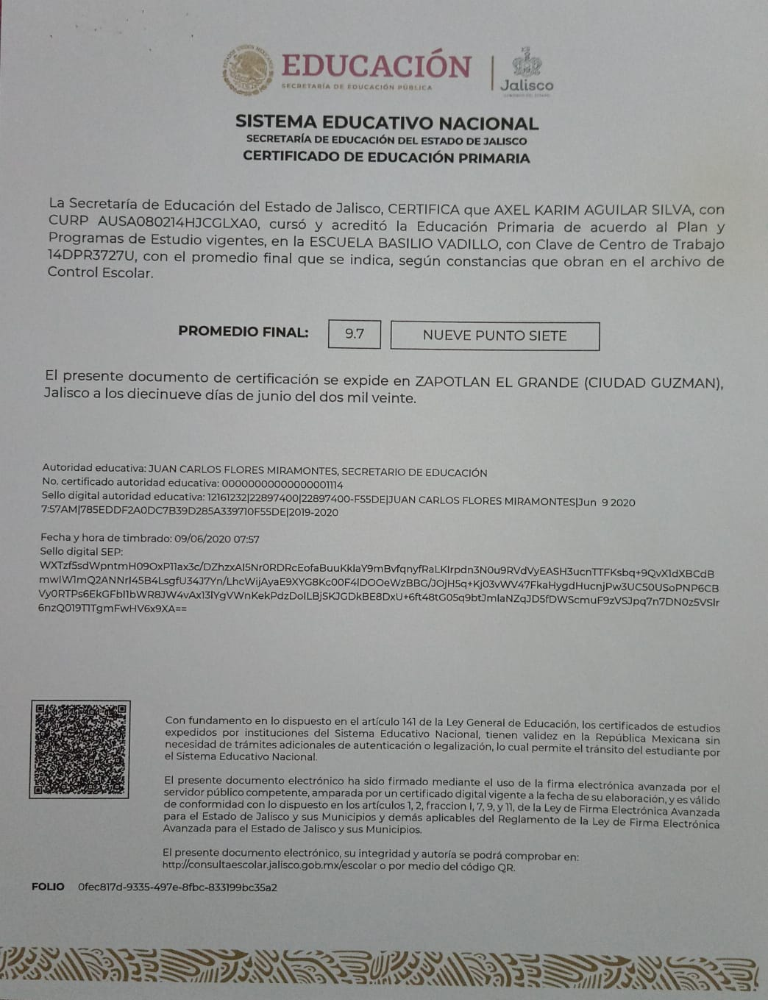
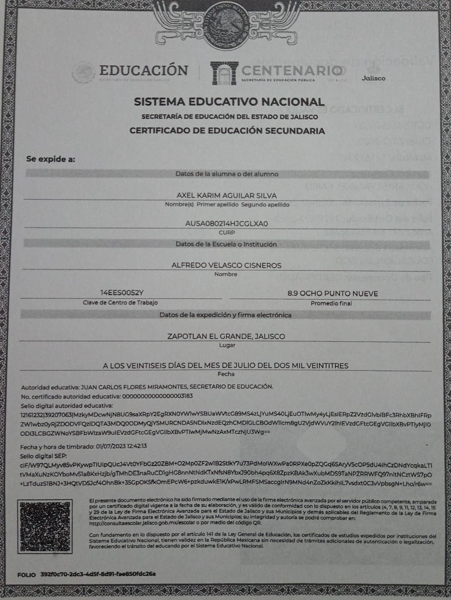

Nombre: Axel Karim Aguilar Silva
CURP: AUSA080214HJCGLXA0
IMSS: 84230830915
Fecha de Nacimiento: 14 de Febrero del 2008
Género: Masculino
Nacionalidad: Mexicana
Tipo de Sangre: O+
Dirección: Av. Las Rosas #12 col. Las Primaveras
Localidad: Zapotlán el Grande
Télefono Móvil: 341-108-7255
Estado Civil: Soltero
E-MAIL: axlimo1402@gmail.com
Redes Sociales: @karim.aguilarx_
Nombre de la institución: Colegio Begsu (1° kinder)
Ubicacion: F, Revolución 50, Morelos, 28217 Manzanillo, Col.
Año inicio: 2011
Año fin: 2012
Campo de Estudio: Educación Preescolar
Nombre de la institución: Jardin de Niños Anexo al Cren (2° kinder)
Ubicacion: Calz Madero y Carranza, Cd Guzmán Centro, 49000 Cdad. Guzmán, Jal.
Año inicio: 2012
Año fin: 2013
Campo de Estudio: Educación Preescolar
Nombre de la institución: Colegio Everest Institute
Ubicacion: Colón 40, C. Corregidora 32, Cd Guzmán Centro, 49000 Cdad. Guzmán, Jal.
Año inicio: 2013
Año graduacion: 2014
Campo de Estudio: Educación Preescolar
Documento Recibido: 
Nombre de la institución: Colegio Vigotsky (1° primaria)
Ubicacion: Colón 40, Emiliano Zapata, 49026 Cdad. Guzmán, Jal.
Año inicio: 2014
Año fin: 2015
Campo de Estudio: Educación Primaria
Nombre de la institución: Escuela Primaria Basilio Vadillo (2° primaria)
Ubicacion: C. Antonio Caso 90, Centro, 49000 Cdad. Guzmán, Jal.
Año inicio: 2015
Año fin: 2016
Campo de Estudio: Educación Primaria
Nombre de la institución: Escuela Primaria "Agustín Yañéz" (3° y 4° primaria)
Ubicacion: Blvd. Sta. Fé 94, 45653 Hacienda Santa Fe, Jal.
Año inicio: 2016
Año fin: 2018
Campo de Estudio: Educación Primaria
Nombre de la institución: Escuela Primaria Basilio Vadillo (5° y 6° primaria)
Ubicacion: C. Antonio Caso 90, Centro, 49000 Cdad. Guzmán, Jal.
Año inicio: 2018
Año graduacion: 2020
Campo de Estudio: Educación Primaria
Documento Recibido: 
Nombre de la institución: Escuela Secundaria Técnica 100 (1° secundaria)
Ubicacion: Licenciado Enrique Castellanos Aguilar 100, 49026 Jal.
Año inicio: 2020
Año fin: 2021
Campo de Estudio: Educanción Secundaria
Nombre de la institución: Escuela Secundaria "Francisco R Almada Almada" CODE (2° secundaria)
Ubicacion: Av. Juan José Arreola Zúñiga 1145, Cd Guzmán, 49026 Cdad. Guzmán, Jal.
Año inicio: 2021
Año fin: 2022
Campo de Estudio: Educación Secundaria
Nombre de la institución: Escuela Secundaria Fóranea 5 "Alfredo Velasco Cisneros" (3° secundaria)
Ubicacion: C. Jazmin 31, Constituyentes, 49000 Cdad. Guzmán, Jal.
Año inicio: 2022
Año graduacion: 2023
Campo de Estudio: Educación Secundaria
Documento Recibido: 
Nombre del lugar de trabajo: Tortilleria Mary's
Ubicación del trabajo: 20 noviembre #19 col. Revolucion
Puesto de trabajo: Repartidor
Tiempo laborado: 4 meses
Nombre del lugar de trabajo: Aguacatera
Ubicación del trabajo: una aguacatera en algun lugar de los alrededores de guzman
Puesto de trabajo: Recolectar y acomodar cajas de aguacate
Tiempo laborado: 2 meses
Nombre del lugar de trabajo: Hashi restaurant
Ubicación del trabajo: federico del toro No. 100 col. centro
Puesto de trabajo: mesero, ayudante de cocina, bartender
Tiempo laborado: 1 año
Nombre del lugar de trabajo: Calificador de examenes
Ubicación del trabajo: mi casa
Puesto de trabajo: Calificador de examenes
Tiempo laborado: 1 mes
Nombre del lugar de trabajo: Punto fit
Ubicación del trabajo: Calle Gral. José Silverio Núñez 8-B, Colonia Centro, 49000 Cdad. Guzmán, Jal
Puesto de trabajo: Vender donas en los alrededores
Tiempo laborado: Trabajo actual